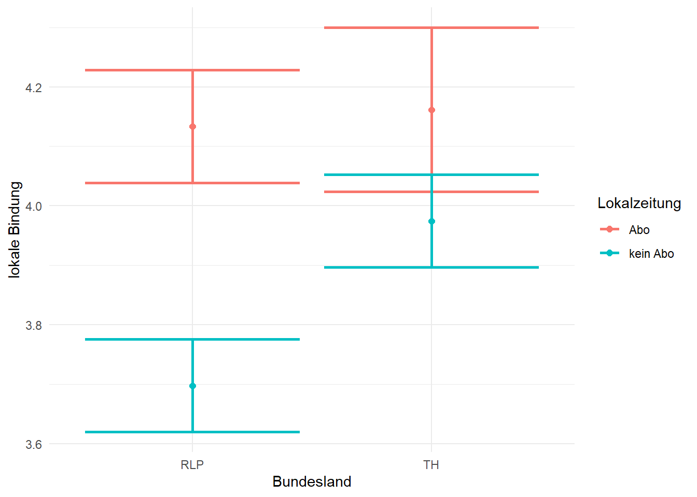
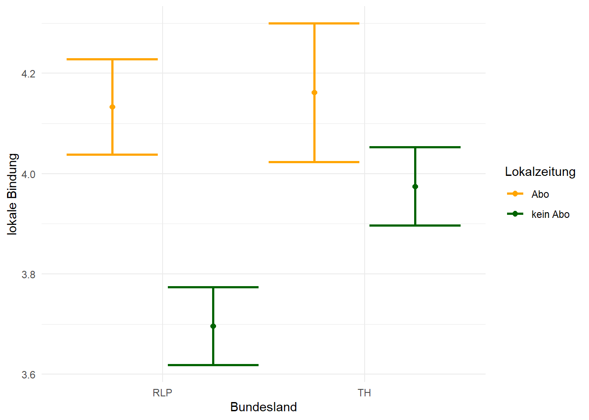

Auch für die Varianzanalyse benötigen wir das tidyverse und easystats Außerdem lesen wir den Datensatz ein und ändern die Optionen so, dass kleine Zahlen in einem uns gewohnten Format angezeigt werden.
# Lädt das tidyverselibrary(tidyverse)
── Attaching core tidyverse packages ──────────────────────── tidyverse 2.0.0 ──
✔ dplyr 1.2.1 ✔ readr 2.2.0
✔ forcats 1.0.1 ✔ stringr 1.6.0
✔ ggplot2 4.0.3 ✔ tibble 3.3.1
✔ lubridate 1.9.5 ✔ tidyr 1.3.2
✔ purrr 1.2.2
── Conflicts ────────────────────────────────────────── tidyverse_conflicts() ──
✖ dplyr::filter() masks stats::filter()
✖ dplyr::lag() masks stats::lag()
ℹ Use the conflicted package (<http://conflicted.r-lib.org/>) to force all conflicts to become errors
# Liest die Daten eindf_lokal <-read.csv("Daten/lokalkommunikation.csv")# Stellt ein, dass sehr kleine Zahlen normal dargestellt werdenoptions(scipen =999)
Zusätzlich benötigen wir ein neues Paket namens car, das wir installieren und laden müssen.
# prüft, ob das Paket "car" installiert ist; falls nein, wird es installiert und geladenif(!require(car)){install.packages("car")library(car)}
Lade nötiges Paket: car
Lade nötiges Paket: carData
Attache Paket: 'car'
Das folgende Objekt ist maskiert 'package:dplyr':
recode
Das folgende Objekt ist maskiert 'package:purrr':
some
Wie im letzten Kapitel werden wir mit den Spalten A501_01 bis A501_04 arbeiten, die die Bindung der Befragten an den Wohnort angeben. Wir bilden also wieder einen Mittelwertindex.
# berechnet pro Person einen Mittelwert der Spalten A501_01 bis A501_04df_lokal <- df_lokal |>mutate(lokaleBindung =row_means(across(c(A501_01:A501_04)), remove_na =TRUE))
11.2 Varianzanalyse durchführen
Im folgenden Teil werden wir eine Varianzanalyse berechnen, bei der wir die neue Variable lokaleBindung als AV verwenden und das Bundesland, in dem die Befragten wohnen, sowie die Abfrage, ob die Befragten eine Lokalzeitung abonniert haben als UVs (Spalten Bula und A204). Letztere codieren wir zu einem beschrifteten Faktor um, wodurch die Interpretation später etwas leichter wird.
#codiert die Spalte A204 zu einem beschrifteten Faktor umdf_lokal <- df_lokal |>mutate(aboLokal =factor(A204, labels =c("Abo", "kein Abo")))
11.2.1 ANOVA
Um eine ANOVA zu berechnen, gehen wir in 3 Schritten vor:
Wir nutzen die lm()-Funktion, um ein lineares Modell (also quasi eine Regression) zu schätzen. Dabei ist es wichtig, dass wir das contrasts-Argument nutzen, und für jede kategoriale Variable (Faktoren, in der ANOVA-Sprache) den Wert "contr.sum" angeben. Das bedeutet nur, dass die entsprechenden Variablen unter der Haube so umcodiert werden, dass die Ausprägungen Werte zwischen -1 und 1 annehmen. Wie der Name andeutet, geht es dabei um eine Summe: Die einzelnen Ausprägungen müssen in der Summe 0 ergeben. Wenn wir so vorgehen kann der Interzept nun als Mittelwert der Gruppenmittelwerte (grand mean) interpretiert werden.
NoteCodierung kategorialer Daten
Schauen wir uns das an einem Beispiel an. Bei einer klassischen Regression werden Faktoren in Form sogenannter Dummy-Variablen codiert: Eine Ausprägung (die Referenzkategorie, z.B. männlich im Beispiel aus Kapitel 9) bekommt den Wert 0, die andere Ausprägung den Wert 1. Wenn wir stattdessen "contr.sum" angeben, werden die Daten so codiert, dass sie in der Summe 0 ergeben. In diesem Beispiel würde eine Ausprägung den Wert 1 und die anderen den Wert -1 zugewiesen bekommen. Das Vorgehen funktioniert so ähnlich auch bei Variablen mit mehr Ausprägungen, also Gruppen. Stellen wir uns vor, wir hätten den wichtigsten Zugangsweg zu Nachrichten der Befragten mit vier Ausprägungen gemessen: Fernsehen , Print, Radio und Online. In einer normalen Regression würde die erste Ausprägung zur Referenzkategorie, mit der die anderen Ausprägungen verglichen werden. Das Ergebnis wären drei Dummy-Variablen, die so aussähen:
Dummy-Codierung für Zugangswege
Bevorzugter Zugangsweg
Dummy 1 (Print)
Dummy 2 (Radio)
Dummy 3 (Online)
Fernsehen
0
0
0
Print
1
0
0
Radio
0
1
0
Online
0
0
1
Unter der Verwendung von "contr.sum" sähen die Kontrast-Variablen so aus:
Codierung für Zugangswege mit “contr.sum”
Bevorzugter Zugangsweg
Kontrast 1
Kontrast 2
Kontrast 3
Fernsehen
1
0
0
Print
0
1
0
Radio
0
0
1
Online
-1
-1
-1
Je nachdem, was man vergleichen möchte bzw. welche Aussage getroffen werden soll, kann es sinnvoll sein, die Kontraste bewusst zu wählen. Neben der einfachen Dummy-Codierung und der Summierung zu 0, gibt es noch zahlreiche andere Arten der Kontrastcodierung, denen wir im Forschungsalltag aber nur gelegentlich begegnen.
Wir nutzen die Anova()-Funktion aus dem car-Paket, um einen F-Test für jeden Prädiktor durchzuführen.
Wir führen Post-hoc-Tests oder geplante Kontraste durch, um zu erfahren, welche Gruppen sich voneinander unterscheiden.
NotePost-hoc-Tests vs. geplante Kontraste
Post-hoc-Tests werden verwendet, wenn wir nach einem allgemeinen Unterschied zwischen mehreren Gruppen zunächst noch nicht wissen, welche Gruppen sich unterscheiden. Häufig werden dazu alle Gruppen paarweise miteinander verglichen. Haben wir dagegen bereits vor der Analyse eine konkrete Hypothese darüber, welche Gruppen oder Gruppen von Gruppen miteinander verglichen werden sollen, können wir einen geplanten Kontrast berechnen. Dadurch testen wir gezielt die theoretisch relevante Hypothese und vermeiden unnötige Vergleiche.
Für den ersten Schritt nutzen wir die oben berechnete Variable lokaleBindung als AV. Die Spalten Bula und aboLokal verbinden wir mit dem *-Operator, sodass wir neben den Haupteffekten auch den Interaktionseffekt berechnen. Ganz konkret bedeutet das, dass wir hier 4 Gruppen miteinander vergleichen: (1) Thüringer mit Lokalzeitungsabo, (2) Thüringer ohne Abo, (3) Rheinland-Pfälzer mit Abo und (4) Rheinland-Pfälzer ohne Abo.
# berechnet eine Regression mit der lokalen Bindung als AV und Bundesland und Lokalzeitungsabo als UVs. Achten Sie auf das contrasts-Argument!model <-lm(lokaleBindung ~ Bula*aboLokal, data = df_lokal, contrasts=list(Bula="contr.sum", aboLokal="contr.sum"))
Ausnahmsweise ignorieren wir die Ausgabe dieser Berechnung. Stattdessen nutzen wir direkt die Anova()-Funktion, die für jeden Prädiktor einen F-Wert berechnet. Wichtig ist hier, dass wir das Argument type = 3 verwenden. Auf die Details gehen wir an dieser Stelle nicht ein, aber im Prinzip geben wir R mit dem type-Argument vor, wie die Werte berechnet werden sollen. type = 3 ist dann sinnvoll, wenn das Modell Interaktionseffekte enthält.
# berechnet F-Werte für jeden PrädiktormodelAnova <-Anova(model, type =3)# zeigt die Ergebnisse anmodelAnova
Bevor wir die Ergebnisse verschriftlichen können, müssen wir noch die Effektstärken berechnen. Dazu nutzen wir die eta_squared()-Funktion aus dem effectsize-Paket. Dieser können wir unsere oben berechnete ANOVA übergeben. Außerdem geben wir das Argument alternative = "two" an. Damit lassen wir ein zweiseitiges Konfidenzintervall berechnen, das sowohl eine untere als auch eine obere plausible Grenze für die Effektstärke angibt. Die Funktion berechnet das partielle Eta², das angibt, wie groß der Anteil der durch einen bestimmten Effekt erklärten Varianz im Verhältnis zur nicht erklärten Varianz ist.
# berechnet das partielle eta² pro Prädiktoreta_squared(modelAnova, alternative ="two")
Type 3 ANOVAs only give sensible and informative results when covariates
are mean-centered and factors are coded with orthogonal contrasts (such
as those produced by `contr.sum`, `contr.poly`, or `contr.helmert`, but
*not* by the default `contr.treatment`).
Bevor wir die Ergebnisse verschriftlichen, lohnt ein genauerer Blick auf die Ausgabe. Ganz oben sehen wir eine Warnung, dass die Effekte nur dann sinnvoll interpretiert werden können, wenn die sogenannten Kontraste angepasst wurden. Das haben wir oben in unserem Aufruf der lm()-Funktion erledigt! Außerdem weist R uns darauf hin, dass etwaige Kovariaten um den Mittelwert zentriert sein müssen (mean-centered).
NoteMittelwertzentrierung
Eine Variable zu zentrieren bedeutet, ihren Mittelwert auf 0 zu setzen. Das geht, indem der Mittelwert von jeder einzelnen Beobachtung abgezogen wird. Wenn wir z. B. einen Vektor haben, der die Zahlen von 0 bis 100 enthält, hat dieser Vektor den Mittelwert 50:
# erstellt einen Vektor aus den Zahlen von 0 bis 100 und zeigt den Mittelwert anzahlen <-0:100mean(zahlen)
[1] 50
Wir können diesen Vektor zentrieren, indem wir von jedem Element den Mittelwert abziehen. Der neue Mittelwert ist dann 0:
# händische Zentrierung des VektorszahlenZentriert <- zahlen-50mean(zahlenZentriert)
[1] 0
Glücklicherweise hat R eine Funktion, die diesen Prozess für uns übernimmt. Sie heißt scale(). Die Funktion nimmt immer einen Vektor (entweder so wie hier oder z. B. eine Spalte aus einem Datensatz) als erstes Argument. Zwei weitere Argumente sind center und scale, die beide automatisch als TRUE angenommen werden, sofern wir nichts anderes angeben. center bedeutet, dass der Mittelwert subtrahiert wird. scale bedeutet, dass die Beobachtungen zusätzlich durch die Standardabweichung aller Beobachtungen geteilt werden. Das Ergebnis ist dann nicht mehr eine zentrierte Variable, sondern eine standardisierte, die den Mittelwert 0 und die Standardabweichung 1 hat. Wenn Sie eine ANCOVA berechnen, sollten Sie metrische Variablen vorher zumindest zentrieren!
# nutzt die Funktion scale(), um den Vektor zu standardisierenzahlenScale <-scale(zahlen)mean(zahlenScale)
[1] 0
sd(zahlenScale)
[1] 1
Mit dieser Warnung im Hinterkopf können wir die Ergebnisse interpretieren. Lassen Sie sich von der etwas komischen Darstellung der Effektstärke nicht abschrecken!
Für das Bundesland wird ein Effekt von `4.91e-03` angegeben. Übersetzt in “normale” Zahlen bedeutet das 0,00491. Wir schreiben also einfach nur 3 Nullen vor die 4,91. Wenn Sie mal nicht sicher sind können Sie solche Zahlen auch unten in die Konsole eingeben und mit Enter ausführen, dann zeigt R Ihnen die Zahl im gewohnten Format an. Ein partielles eta² von 0,00491 entspricht einem sehr schwachen Effekt. Ob die Leute ein Lokalzeitungsabo haben erklärt dagegen etwas mehr Varianz (partielles eta² = 0,02) und die Interaktion aus diesen beiden Variablen ebenfalls (partielles eta² = 0,003). Wir haben also drei (sehr) schwache Effekte identifiziert, die aber laut unserer ANOVA-Tabelle oben alle signifikant sind.
Mit Hilfe der beiden Ausgaben können wir die Ergebnisse nach dem folgenden Muster aufschreiben: Pro Prädiktor werden der F-Wert, die dazugehörigen Freiheitsgrade (Spalte Df) und der p-Wert angegeben. Zusätzliche Informationen über das Gesamtmodell können wir der Tabelle oben entnehmen.
Um zu prüfen, ob ein Lokalzeitungsabo und das Bundesland, in dem die Befragten wohnen, sowie der Interaktionseffekt dieser beiden Variablen einen Effekt auf die lokale Bindung der Befragten haben, wurde eine ANOVA berechnet. Das Bundesland hatte einen signifikanten, aber sehr schwachen Effekt (F(1, 1825) = 9,01; p = 0,003; partielles eta² = 0,005). Der Effekt des Lokalzeitungsabos war ebenfalls signifikant und schwach (F(1, 1825) = 37,27; p < 0,001; partielles eta² = 0,02). Auch der Interaktionseffekt der beiden Variablen war signifikant, aber sehr schwach (F(1, 1825) = 5,99; p = 0,014; partielles eta² = 0,003).
Bevor die Analyse abgeschlossen ist, müssen wir noch die sogenannten Post-hoc-Tests durchführen, bei denen wir die jeweiligen Gruppenmittelwerte miteinander vergleichen. Dazu nutzen wir die estimate_contrasts()-Funktion aus easystats. Wir übergeben der Funktion das Modell, das wir ursprünglich mit lm() geschätzt haben, sowie im Argument contrast die Variablen aus denen die Gruppenmittelwerte berechnet werden. In unserem Fall sind das einfach die beiden Faktoren Bula und aboLokal. estimate_contrasts() berechnet dann die entsprechenden Mittelwertvergleiche (also t-Tests) für alle möglichen Gruppenpaare. Da wir hier eine ganze Reihe an Tests durchführen, sollten wir die p-Werte korrigieren (siehe Video). Das machen wir mit dem Argument p_adjust, dem wir den Wert "bonferroni" zuweisen.
# berechnet Post-Hoc-Tests für die Anovaestimate_contrasts(model, contrast =c("Bula", "aboLokal"), p_adjust ="bonferroni")
Hier sehen wir (in der letzten Spalte), dass wir drei signifikante Gruppenvergleiche haben: Menschen aus Rheinland-Pfalz mit Abo haben eine höhere lokale Bindung als Menschen aus Rheinland-Pfalz ohne Abo. Das gleiche gilt nicht für Menschen aus Thüringen! Außerdem haben Menschen aus Thüringen mit Abo eine höhere Bindung als Menschen aus RLP ohne Abo. Letztere haben außerdem eine geringere Bindung als Menschen aus Thüringen ohne Abo. Das ist zugegebenermaßen etwas komplex. Um die Ergebnisse etwas besser nachvollziehen zu können, lohnt ein Blick auf die deskriptiven Werte. Diese können Sie sich anzeigen lassen, indem Sie die estimate_means()-Funktion aufrufen, der wir wieder das Modell sowie die beiden Faktoren übergeben. Eine solche Tabelle sollten Sie auch im Ergebnisteil einer empirischen Arbeit mit angeben!1
# berechnet die Gruppenmittelwerte aus der ANOVA und zeigt diese anestimate_means(model, by =c("Bula", "aboLokal"))
Hier sehen wir nun sehr deutlich, dass Befragte aus Thüringen mit und ohne Abo jeweils eine etwas höhere lokale Bindung hatten als die jeweiligen Gruppen aus Rheinland-Pfalz. Außerdem haben in jedem Bundesland die Befragten mit Abo eine höhere Bindung als Befragte ohne Abo. Den Interaktionseffekt erkennen Sie daran, dass sich der Unterschied zwischen den Bundesländern je nach Abo-Status verändert. Formal getestet wird, ob der Unterschied zwischen Abo und kein Abo in den beiden Bundesländern identisch ist. Das ist hier nicht der Fall.
Bevor wir diese Ergebnisse visualisieren, schreiben wir sie noch kurz auf:
Post-hoc-Tests zeigten, dass drei Gruppenvergleiche signifikant waren: Befragte aus Rheinland-Pfalz mit Abo einer Lokalzeitung hatten eine höhere lokale Bindung als Befragte aus Rheinland-Pfalz ohne Abo (t(1825) = 6,98; p < 0,001). Außerdem hatten Befragte aus TH mit Abo eine höhere Bindung als Befragte aus Rheinland-Pfalz ohne Abo (t(1825) = 5,75; p < 0,001). Diese Gruppe hatte wiederum eine geringere Bindung als Befragte aus Thüringen ohne Abo (t(1825) = -4,95; p < 0,001)
11.3 Ergebnis visualisieren
Im Kontext von ANOVAs wird oft eine Visualisierung verwendet, die wir ganz am Ende von Kapitel 4 schon mal kennengelernt haben: Dort haben wir die Mittelwerte und Standardabweichungen von Gruppenmittelwerten geplottet. Hier machen wir im Prinzip das Gleiche, nur dass wir nicht die Standardabweichungen, sondern die 95%-Konfidenzintervalle der Mittelwerte visualisieren. Außerdem müssen wir anders als in Kapitel 4 berücksichtigen, dass wir nun zwei Gruppierungsvariablen haben.
Zuerst erstellen wir ein Objekt, in dem wir die Informationen aus der estimate_means()-Funktion speichern.
# Spiechert die Gruppenmittelwerte, Standardfehler und KonfidenzintervalleMWsCIs <-estimate_means(model, by =c("Bula", "aboLokal"))
Damit können wir nun einen Plot erstellen. Verglichen mit dem Plot aus Kapitel 4 ergänzen wir hier nur das Argument color innerhalb der aes()-Funktion, um das Lokalzeitungsabo darzustellen.
# Plottet die Gruppenmittelwerte und KonfidenzintervalleplotANOVA <- MWsCIs |>ggplot(aes(x = Bula, y = Mean, color = aboLokal))+geom_point(size =2)+geom_errorbar(aes(ymin = CI_low, ymax = CI_high), linewidth =1)+labs(x ="Bundesland", y ="lokale Bindung", color ="Lokalzeitung")+theme_minimal()plotANOVA

Im Grunde sieht das schon ganz gut aus. Allerdings ist es etwas ungünstig, dass sich die Balken für die beiden Gruppen aus Thüringen überschneiden. Das können wir ganz einfach beheben, indem wir sowohl geom_point() als auch geom_errorbar() das Argument position mit dem Wert position_dodge(1) übergeben. Außerdem sind hier noch die Farben etwas angepasst:
# Plottet die Gruppenmittelwerte und KonfidenzintervalleplotANOVA <- MWsCIs |>ggplot(aes(x = Bula, y = Mean, color = aboLokal))+geom_point(size =2, position =position_dodge(1))+geom_errorbar(aes(ymin = CI_low, ymax = CI_high), linewidth =1, position =position_dodge(1))+labs(x ="Bundesland", y ="lokale Bindung", color ="Lokalzeitung")+theme_minimal()+scale_color_manual(values =c("orange", "darkgreen"))plotANOVA

Die letzte Spalte der ausgegebenen Tabelle (t) zeigt an, ob sich der Mittelwert einer Gruppe von 0 unterscheidet. Das ist hier keine wirklich hilfreiche Info und kann ignoriert werden. Auch im Ergebnisteil einer Arbeit brauchen Sie das nicht anzugeben!↩︎